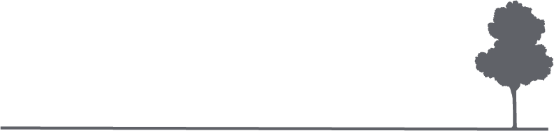
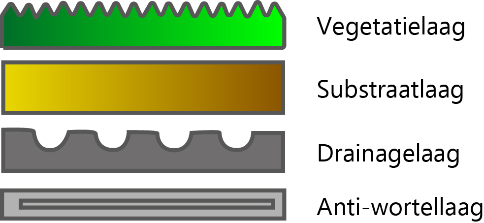
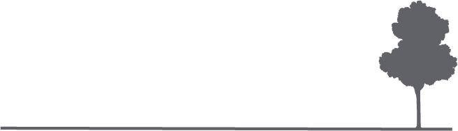

Groene daken
Misschien heb je het de afgelopen jaren wel gemerkt. In Nederland worden de winters zachter met meer regen en de zomers droog en heet. Dit zijn allemaal gevolgen van klimaatverandering. Ook zullen stormen extremer zijn en overstromingen komen frequenter voor.
Als burger van Nederland kun je dit niet helemaal alleen tegenhouden. Maar met een groen dak kun jij deze negatieve gevolgen afremmen en jouw huis een veiligere plek maken voor de toekomst.
Een groen dak
Een groen dak is een dak waar allerlei verschillende soorten planten op groeien, denk vooral aan mos en grassen, maar soms ook bomen en bloemen. Zo’n dak oogt niet alleen mooi maar brengt ook een hoop voordelen met zich mee. Een groen dak is bijvoorbeeld een extra isolatielaag voor je huis! Ook absorbeert het regenwater wat weer voordeel heeft op het rioolsysteem. Daarbij komt de verlengde levensduur van je dak en werk je mee aan een betere biodiversiteit.
Is een groen dak voor jou geschikt? Wat zijn en voordelen en waar moet je op letten? Hoe installeer je een groen dak? Dit gaan we allemaal bespreken.
Wat is een groen dak?
Een groen dak bestaat uit meerdere lagen die samenwerken en een geheel vormen.
De anti-wortellaag, ook wel de beschermlaag. Vaak is deze in de praktijk niet nodig omdat het bestaande dak genoeg bescherming biedt.
Vervolgens de drainagelaag, vaak komt deze in de vorm van een kunststof raster, die er voor zorgt dat regenwater wordt afgevoerd.
De substraatlaag is een mengsel van zand en aarde die de vegetatie op het groene dak laat groeien. In deze laag planten de wortels zich en worden water en voedingstoffen opgeslagen.
En dan de bovenste laag, de vegetatielaag dit is het zichtbare gedeelte van het dak die bestaat uit diverse planten.
Voordelen
Wij zetten hier de voordelen voor een groen dak voor jou op een rijtje.
1. Het absorberen van water
Bij hevige regenval heeft een groen dak een bufferfunctie, waardoor je het rioolsysteem minder belast. De afvoer van water kan door een groen dak tot wel 45% worden vertraagd vergeleken met een normaal dak.
2. Isolerende werking
De temperatuur van een groen dak heeft een maximum van 35°C, terwijl bij een regulier bitumineus zwart dak de temperatuur kan oplopen tot wel 85°C, in de warme zomers zul je dan ook merken dat met een groen dak je huis koeler is. Zo hoeft de airco minder hard te werken en dat is weer goed voor jou portemonnee.
3. Zuivere lucht
Planten op een groen dak hebben de mogelijkheid om CO2, koper, lood en zink in zich op te nemen en dat om te zetten in zuurstof. In stedelijke gebieden waar luchtvervuiling het meest speelt kunnen groene daken dus een zekere rol spelen aan het bijdragen van zuivere lucht.
4. Levensduur dak
Een groen dak zorgt voor langere levensduur van je dakbedekking. Door de invloed van regen, wind en zon heeft een normaal bitumen dak een gemiddelde levensduur van 25 jaar. Terwijl de levensduur van een groendak minstens 50 jaar is. Waardoor de waarde van woningen met groene daken is verhoogt.